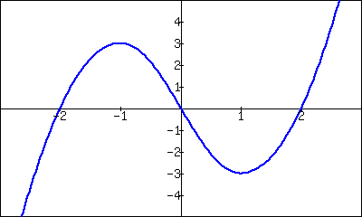

A common amusement park ride lifts riders to a height then allows them to freefall a certain distance before safely stopping them. Suppose such a ride drops riders from a height of \(150\) feet. Students of physics may recall that the height (in feet) of the riders, \(t\) seconds after freefall (and ignoring air resistance, etc.) can be accurately modeled by \(f(t) = -16t^2+150\text{.}\)
Using this formula, it is easy to verify that, without intervention, the riders will hit the ground when \(f(t)=0\) so at \(t=2.5\sqrt{1.5} \approx 3.06\) seconds. Suppose the designers of the ride decide to begin slowing the riders' fall after \(2\) seconds (corresponding to a height of \(f(2)=\)86 ft). How fast will the riders be traveling at that time?
We have been given a position function, but what we want to compute is a velocity at a specific point in time, i.e., we want an instantaneous velocity. We do not currently know how to calculate this.
However, we do know from common experience how to calculate an average velocity. (If we travel \(60\) miles in \(2\) hours, we know we had an average velocity of 30 mph.) We looked at this concept in Section 1.1 when we introduced the difference quotient. We have
\begin{equation*}
\frac{\text{change in distance}}{\text{change in time}} = \frac{\text{“rise”}}{\text{“run”}} = \text{average velocity.}
\end{equation*}
We can approximate the instantaneous velocity at \(t=2\) by considering the average velocity over some time period containing \(t=2\text{.}\) If we make the time interval small, we will get a good approximation. (This fact is commonly used. For instance, high speed cameras are used to track fast moving objects. Distances are measured over a fixed number of frames to generate an accurate approximation of the velocity.)
Consider the interval from \(t=2\) to \(t=3\) (just before the riders hit the ground). On that interval, the average velocity is
where the minus sign indicates that the riders are moving down. By narrowing the interval we consider, we will likely get a better approximation of the instantaneous velocity. On \([2,2.5]\) we have
We can do this for smaller and smaller intervals of time. For instance, over a time span of one tenth of a second, i.e., on \([2,2.1]\text{,}\) we have
We really want to use \(h=0\text{,}\) but this, of course, returns the familiar “\(0/0\)” indeterminate form. So we employ a limit, as we did in Section 1.1.
We can approximate the value of this limit numerically with small values of \(h\) as seen in Table 2.1.2. It looks as though the velocity is approaching -64 ft⁄s.
Table2.1.2.Approximating the instantaneous velocity with average velocities over a small time period \(h\)
Graphically, we can view the average velocities we computed numerically as the slopes of secant lines on the graph of \(f\) going through the points \((2,f(2))\) and \((2+h,f(2+h))\text{.}\) In Figures 2.1.3–2.1.5, the secant line corresponding to \(h=1\) is shown in three contexts. Figure 2.1.3 shows a “zoomed out” version of \(f\) with its secant line. In Figure 2.1.4, we zoom in around the points of intersection between \(f\) and the secant line. Notice how well this secant line approximates \(f\) between those two points — it is a common practice to approximate functions with straight lines.
Figure2.1.3.The function \(f(t)\) and its secant line corresponding to \(t=2\) and \(t=3\)
Figure2.1.4.The function \(f(t)\) and a secant line corresponding to \(t=2\) and \(t=3\text{,}\) zoomed in near \(t=2\)
Figure2.1.5.The function \(f(t)\) with the same secant line, zoomed in further
Figure2.1.6.The function \(f(t)\) with its tangent line at \(t=2\)
As \(h\to 0\text{,}\) these secant lines approach the tangent line, a line that goes through the point \((2,f(2))\) with the special slope of \(-64\text{.}\) In Figure 2.1.5 and Figure 2.1.6, we zoom in around the point \((2,86)\text{.}\) We see the secant line, which approximates \(f\) well, but not as well the tangent line shown in Figure 2.1.6.
We have just introduced a number of important concepts that we will flesh out more within this section. First, we formally define two of them.
Definition2.1.7.Derivative at a Point.
Let \(f\) be a continuous function on an open interval \(I\) and let \(c\) be in \(I\text{.}\) The derivative of \(f\) at \(c\text{,}\) denoted \(\fp(c)\text{,}\) is
provided the limit exists. If the limit exists, we say that \(f\) is differentiable at \(c\text{;}\) if the limit does not exist, then \(f\) is not differentiable at \(c\text{.}\) If \(f\) is differentiable at every point in \(I\text{,}\) then \(f\) is differentiable on \(I\text{.}\)
Let \(f\) be continuous on an open interval \(I\) and differentiable at \(c\text{,}\) for some \(c\) in \(I\text{.}\) The line with equation \(\ell(x) = \fp(c)(x-c)+f(c)\) is the tangent line to the graph of \(f\) at \(c\text{;}\) that is, it is the line through \((c,f(c))\) whose slope is the derivative of \(f\) at \(c\text{.}\)
Some examples will help us understand these definitions.
Example2.1.10.Finding derivatives and tangent lines.
Let \(f(x) = 3x^2+5x-7\text{.}\) Find:
\(\displaystyle \fp(1)\)
The equation of the tangent line to the graph of \(f\) at \(x=1\text{.}\)
\(\displaystyle \fp(3)\)
The equation of the tangent line to the graph \(f\) at \(x=3\text{.}\)
The tangent line at \(x=1\) has slope \(\fp(1)\) and goes through the point \((1,f(1)) = (1,1)\text{.}\) Thus the tangent line has equation, in point-slope form, \(y = 11(x-1) + 1\text{.}\) In slope-intercept form we have \(y = 11x-10\text{.}\)
The tangent line at \(x=3\) has slope \(23\) and goes through the point \((3,f(3)) = (3,35)\text{.}\) Thus the tangent line has equation \(y=23(x-3)+35 = 23x-34\text{.}\)
A graph of \(f\) is given in Figure 2.1.11 along with the tangent lines at \(x=1\) and \(x=3\text{.}\)
Figure2.1.11.A graph of \(f(x) = 3x^2+5x-7\) and its tangent lines at \(x=1\) and \(x=3\)
In Definition 2.1.7, we assumed that the function is continuous, but this is actually not necessary. One can in fact prove that a function has to be continuous at any point where it is differentiable. Or, in other words, a function cannot be differentiable at a point of discontinuity. This is explained in the video in Figure 2.1.12.
Figure2.1.12.Showing that every differentiable function is continuous
Another important line that can be created using information from the derivative is the normal line. It is perpendicular to the tangent line, hence its slope is the negative-reciprocal of the tangent line's slope.
Definition2.1.13.Normal Line.
Let \(f\) be continuous on an open interval \(I\) and differentiable at \(c\text{,}\) for some \(c\) in \(I\text{.}\) The normal line to the graph of \(f\) at \(c\) is the line with equation
when \(\fp(c)\neq 0\text{.}\) (When \(\fp(c)=0\text{,}\) the normal line is the vertical line through \(\left(c,f(c)\right)\text{;}\) that is, \(x=c\text{.}\))
Example2.1.14.Finding equations of normal lines.
Let \(f(x) = 3x^2+5x-7\text{,}\) as in Example 2.1.10. Find the equations of the normal lines to the graph of \(f\) at \(x=1\) and \(x=3\text{.}\)
In Example 2.1.10, we found that \(\fp(1)=11\text{.}\) Hence at \(x=1\text{,}\) the normal line will have slope \(-1/11\text{.}\) An equation for the normal line is
The normal line is plotted with \(y=f(x)\) in Figure 2.1.15. Note how the line looks perpendicular to \(f\text{.}\) (A key word here is “looks.” Mathematically, we say that the normal line is perpendicular to \(f\) at \(x=1\) as the slope of the normal line is the negative-reciprocal of the slope of the tangent line. However, normal lines may not always look perpendicular.
Figure2.1.15.A graph of \(f(x)=3x^2+5x-7\text{,}\) along with its normal line at \(x=1\)
The aspect ratio of the picture of the graph plays a big role in this. When using graphing software, there is usually an option called Zoom Square that keeps the aspect ratio \(1:1\)
We also found that \(\fp(3) = 23\text{,}\) so the normal line to the graph of \(f\) at \(x=3\) will have slope \(-1/23\text{.}\) An equation for the normal line is
Linear functions are easy to work with; many functions that arise in the course of solving real problems are not easy to work with. A common practice in mathematical problem solving is to approximate difficult functions with not-so-difficult functions. Lines are a common choice. It turns out that at any given point on the graph of a differentiable function \(f\text{,}\) the best linear approximation to \(f\) is its tangent line. That is one reason we'll spend considerable time finding tangent lines to functions.
One type of function that does not benefit from a tangent line approximation is a line; it is rather simple to recognize that the tangent line to a line is the line itself. We look at this in the following example.
Example2.1.16.Finding the derivative of a linear function.
Consider \(f(x) = 3x+5\text{.}\) Find the equation of the tangent line to \(f\) at \(x=1\) and \(x=7\text{.}\)
We just found that \(\fp(1) = 3\text{.}\) That is, we found the instantaneous rate of change of \(f(x) = 3x+5\) is \(3\text{.}\) This is not surprising; lines are characterized by being the only functions with a constant rate of change. That rate of change is called the slope of the line. Since their rates of change are constant, their instantaneous rates of change are always the same; they are all the slope.
So given a line \(f(x) = ax+b\text{,}\) the derivative at any point \(x\) will be \(a\text{;}\) that is, \(\fp(x) = a\text{.}\)
It is now easy to see that the tangent line to the graph of \(f\) at \(x=1\) is just \(f\text{,}\) with the same being true at \(x=7\text{.}\)
We often desire to find the tangent line to the graph of a function without knowing the actual derivative of the function. While we will eventually be able to find derivatives of many common functions, the algebra and limit calculations on some functions are complex. Until we develop further techniques, the best we may be able to do is approximate the tangent line. We demonstrate this in the next example.
Example2.1.17.Numerical approximation of the tangent line.
Approximate the equation of the tangent line to the graph of \(f(x)=\sin(x)\) at \(x=0\text{.}\)
In order to find the equation of the tangent line, we need a slope and a point. The point is given to us: \((0,\sin(0)) = (0,0)\text{.}\) To compute the slope, we need the derivative. This is where we will make an approximation. Recall that
Thus our approximation of the equation of the tangent line is \(y = 0.9983(x-0) +0 = 0.9983x\text{;}\) it is graphed in Figure 2.1.18. The graph seems to imply the approximation is rather good.
Figure2.1.18.\(f(x) = \sin(x)\) graphed with an approximation to its tangent line at \(x=0\)
Recall from Section 1.3 that \(\lim_{x\to 0}\frac{\sin(x)}x =1\text{,}\) meaning for values of \(x\) near \(0\text{,}\)\(\sin(x) \approx x\text{.}\) Since the slope of the line \(y=x\) is \(1\) at \(x=0\text{,}\) it should seem reasonable that “the slope of \(f(x)=\sin(x)\)” is near \(1\) at \(x=0\text{.}\) In fact, since we approximated the value of the slope to be \(0.9983\text{,}\) we might guess the actual value is 1. We'll come back to this later.
Consider again Example 2.1.10. To find the derivative of \(f\) at \(x=1\text{,}\) we needed to evaluate a limit. To find the derivative of \(f\) at \(x=3\text{,}\) we needed to again evaluate a limit. We have this process:
This process describes a function; given one input (the value of \(c\)), we return exactly one output (the value of \(\fp(c)\)). The “do something” box is where the tedious work (taking limits) of this function occurs.
Instead of applying this function repeatedly for different values of \(c\text{,}\) let us apply it just once to the variable \(x\text{.}\) We then take a limit just once. The process now looks like:
The output is the derivative function, \(\fp(x)\text{.}\) The \(\fp(x)\) function will take a number \(c\) as input and return the derivative of \(f\) at \(c\text{.}\) This calls for a definition.
Definition2.1.19.Derivative Function.
Let \(f\) be a differentiable function on an open interval \(I\text{.}\) The function
Important: The notation \(\frac{dy}{dx}\) is one symbol; it is not the fraction “\(dy/dx\)”. The notation, while somewhat confusing at first, was chosen with care. A fraction-looking symbol was chosen because the derivative has many fraction-like properties. Among other places, we see these properties at work when we talk about the units of the derivative, when we discuss the Chain Rule, and when we learn about integration (topics that appear in later sections and chapters).
Figure2.1.21.Explaining derivative notation
Examples will help us understand this definition.
Example2.1.22.Finding the derivative of a function.
Let \(f(x) = 3x^2+5x-7\) as in Example 2.1.10. Find \(\fp(x)\text{.}\)
So \(\fp(x) = 6x+5\text{.}\) Recall earlier we found that \(\fp(1) = 11\) and \(\fp(3) = 23\text{.}\) Note our new computation of \(\fp(x)\) affirms these facts.
Example2.1.23.Finding the derivative of a function.
Let \(f(x) = \frac{1}{x+1}\text{.}\) Find \(\fp(x)\text{.}\)
Before applying Definition 2.1.19, note that once this is found, we can find the actual tangent line to \(f(x) = \sin(x)\) at \(x=0\text{,}\) whereas we settled for an approximation in Example 2.1.17.
We have found that when \(f(x) = \sin(x)\text{,}\)\(\fp(x) = \cos(x)\text{.}\) This should be somewhat amazing; the result of a tedious limit process on the sine function is a nice function. Then again, perhaps this is not entirely surprising. The sine function is periodic — it repeats itself on regular intervals. Therefore its rate of change also repeats itself on the same regular intervals. We should have known the derivative would be periodic; we now know exactly which periodic function it is.
Thinking back to Example 2.1.17, we can find the slope of the tangent line to \(f(x)=\sin(x)\) at \(x=0\) using our derivative. We approximated the slope as \(0.9983\text{;}\) we now know the slope is exactly\(\cos(0) =1\text{.}\)
Using similar techniques, we can show that the derivative of \(\cos(x)\) is \(-\sin(x)\text{.}\) See if you can show this yourself; if you get stuck, you can check out the video in Figure 2.1.25.
Figure2.1.25.Finding the derivative of \(\cos(x)\)
Example2.1.26.Finding the derivative of a piecewise defined function.
Find the derivative of the absolute value function,
Figure2.1.27.The absolute value function \(f(x) = \abs{x}\text{.}\) Notice how the slope of the lines (and hence the tangent lines) abruptly changes at \(x=0\text{.}\)
We need to evaluate \(\lim_{h\to0}\frac{f(x+h)-f(x)}{h}\text{.}\) As \(f\) is piecewise-defined, we need to consider separately the limits when \(x\lt 0\) and when \(x \gt 0\text{.}\)
Since \(x=0\) is the point where our function's definition switches from one piece to the other, we need to consider left and right-hand limits. Consider the following, where we compute the left and right hand limits side by side.
The last lines of each column tell the story: the left and right hand limits are not equal. Therefore the limit does not exist at \(0\text{,}\) and \(f\) is not differentiable at \(0\text{.}\) So we have
At \(x=0\text{,}\)\(\fp(x)\) does not exist; there is a jump discontinuity at \(0\text{;}\) see Figure 2.1.28. So \(f(x) = \abs{x}\) is differentiable everywhere except at \(0\text{.}\)
Figure2.1.28.A graph of the derivative of \(f(x) = \abs{x}\)
The point of non-differentiability came where the piecewise defined function switched from one piece to the other. Our next example shows that this does not always cause trouble.
Example2.1.29.Finding the derivative of a piecewise defined function.
Using Example 2.1.24, we know that when \(x\lt \pi/2\text{,}\)\(\fp(x) = \cos(x)\text{.}\) It is easy to verify that when \(x \gt \pi/2\text{,}\)\(\fp(x) = 0\text{;}\) consider:
We still need to find \(\fp(\pi/2)\text{.}\) Notice at \(x=\pi/2\) that both pieces of \(\fp\) are \(0\text{,}\) meaning we can state that \(\fp(\pi/2)=0\text{.}\)
Being more rigorous, we can again evaluate the difference quotient limit at \(x=\pi/2\text{,}\) utilizing again left- and right-hand limits. We will begin with the left-hand limit:
Since both the left and right hand limits are \(0\) at \(x=\pi/2\text{,}\) the limit exists and \(\fp(\pi/2)\) exists (and is \(0\)). Therefore we can fully write \(\fp\) as
For one more example involving piecewise-defined functions, we turn to the video in Figure 2.1.32.
Figure2.1.32.Determining when a piecewise-defined function is differentiable
Recall we pseudo-defined a continuous function as one in which we could sketch its graph without lifting our pencil. We can give a pseudo-definition for differentiability as well: it is a continuous function that does not have any “sharp corners” or a vertical tangent line. One such sharp corner is shown in Figure 2.1.27. Even though the function \(f\) in Example 2.1.29 is piecewise-defined, the transition is “smooth” hence it is differentiable. Note how in the graph of \(f\) in Figure 2.1.30 it is difficult to tell when \(f\) switches from one piece to the other; there is no “corner.”
Subsection2.1.2Differentiability on Closed Intervals
When we defined the derivative at a point in Definition 2.1.7, we specified that the interval \(I\) over which a function \(f\) was defined needed to be an open interval. Open intervals are required so that we can take a limit at any point \(c\) in \(I\text{,}\) meaning we want to approach \(c\) from both the left and right.
Recall we also required open intervals in Definition 1.5.1 when we defined what it meant for a function to be continuous. Later, we used one-sided limits to extend continuity to closed intervals. We now extend differentiability to closed intervals by again considering one-sided limits.
Our motivation is three-fold. First, we consider “common sense.” In Example 2.1.22 we found that when \(f(x) = 3x^2+5x-7\text{,}\)\(\fp(x) = 6x+5\text{,}\) and this derivative is defined for all real numbers, hence \(f\) is differentiable everywhere. It seems appropriate to also conclude that \(f\) is differentiable on closed intervals, like \([0,1]\text{,}\) as well. After all, \(\fp(x)\) is defined at both \(x=0\) and \(x=1\text{.}\)
Secondly, consider \(f(x) = \sqrt{x}\text{.}\) The domain of \(f\) is \([0,\infty)\text{.}\) Is \(f\) differentiable on its domain — specifically, is \(f\) differentiable at \(0\text{?}\) (We'll consider this in the next example.)
Finally, in later sections, having the derivative defined on closed intervals will prove useful. One such place is Section 7.4 where the derivative plays a role in measuring the length of a curve.
After a formal definition of differentiability on a closed interval, we explore the concept in an example.
Definition2.1.33.Differentiability on a Closed Interval.
Let \(f\) be continuous on \([a,b]\) and differentiable on \((a,b)\text{.}\) If the one-sided limits
exist, then we say \(f\) is differentiable on \([a,b]\text{.}\)
For all the functions \(f\)in this text, we can determine differentiability on \([a,b]\) by considering the limits \(\lim_{x\to a^+}\fp(x)\) and \(\lim_{x\to b^-}\fp(x)\text{.}\) This is often easier to evaluate than the limit of the difference quotient.
Example2.1.34.Differentiability at an endpoint.
Consider \(f(x) = \sqrt{x}=x^{1/2}\) and \(g(x) = \sqrt{x^3}=x^{3/2}\text{.}\) The domain of each function is \([0,\infty)\text{.}\) It can be shown that each is differentiable on \((0,\infty)\text{;}\) determine the differentiability of each at \(x=0\text{.}\)
The one-sided limit of the difference quotient does not exist at \(x=0\) for \(f\text{;}\) therefore \(f\) is differentiable on \((0,\infty)\) and not differentiable on \([0,\infty)\text{.}\)
We state (without proof) that \(\fp(x) = 1/\big(2\sqrt{x}\big)\text{.}\) Note that \(\lim_{x\to 0^+}\fp(x) = \infty\text{;}\) this limit was easier to evaluate than the limit of the difference quotient, though it required us to already know the derivative of \(f\text{.}\)
As the one-sided limit exists at \(x=0\text{,}\) we conclude \(g\) is differentiable on its domain of \([0,\infty)\text{.}\)
Figure2.1.35.A graph of \(y=x^{1/2}\) and \(y=x^{3/2}\) in Example 2.1.34
We state (without proof) that \(\gp(x) = 3\sqrt{x}/2\text{.}\) Note that \(\lim_{x\to0^+}\gp(x) = 0\text{;}\) again, this limit is easier to evaluate than the limit of the difference quotient.
The two functions are graphed in Figure 2.1.35. Note how \(f(x) = \sqrt{x}\) seems to “go vertical” as \(x\) approaches 0, implying the slopes of its tangent lines are growing toward infinity. Also note how the slopes of the tangent lines to \(g(x)= \sqrt{x^3}\) approach 0 as \(x\) approaches 0.
Most calculus textbooks omit this topic and simply avoid specific cases where it could be applied. We choose in this text to not make use of the topic unless it is “needed.” Many theorems in later sections require a function \(f\) to be differentiable on an open interval \(I\text{;}\) we could remove the word “open” and just use “\(\ldots\) on an interval \(I\text{,}\)” but choose to not do so in keeping with the current mathematical tradition. Our first use of differentiability on closed intervals comes in Chapter 7, where we measure the lengths of curves.
This section defined the derivative; in some sense, it answers the question of “What is the derivative?” The next section addresses the question “What does the derivative mean?”
Exercises2.1.3Exercises
Terms and Concepts
1.
True
False
Let \(f\) be a position function. The average rate of change on \([a,b]\) is the slope of the line through the points \((a, f(a))\) and \((b,f(b))\text{.}\)
2.
True
False
The definition of the derivative of a function at a point involves taking a limit.
3.
In your own words, explain the difference between the average rate of change and instantaneous rate of change.
4.
In your own words, explain the difference between Definitions 2.1.7 and Definition 2.1.19.
5.
Let \(y=f(x)\text{.}\) Give three different notations equivalent to “\(f'(x)\text{.}\)”
6.
If two lines are perpendicular, what is true of their slopes?
Problems
Exercise Group.
Use the definition of the derivative to compute the derivative of the given function.
7.
\(f(x) = 6\)
Show your work.
8.
\(f(x) = 2x\)
Show your work.
9.
\(f(t) = 4-3t\)
Show your work.
10.
\(g(x) = x^2\)
Show your work.
11.
\(h(x) = x^3\)
Show your work.
12.
\(f(x) = 3x^2-x+4\)
Show your work.
13.
\(r(x) = \frac{1}{x}\)
Show your work.
14.
\(r(s) = \frac{1}{s-2}\)
Show your work.
Exercise Group.
A function and an \(x\)-value are given. (Note: these functions are the same as those given in Exercises 2.1.3.7 through Exercise 2.1.3.14.) Give the equations of the tangent line and the normal line at that \(x\)-value.
15.
\(f(x)=6\) at \(x=-2\)
16.
\(f(x)=2x\) at \(x=3\)
17.
\(f(x)=4-3x\) at \(x=7\)
18.
\(g(x)=x^2\) at \(x=2\)
19.
\(h(x)=x^3\) at \(x=4\)
20.
\(f(x)=3x^2-x+4\) at \(x=-1\)
21.
\(r(x)=\frac{1}{x}\) at \(x=-2\)
22.
\(r(x)=\frac{1}{x-2}\) at \(x=3\)
Exercise Group.
A function \(f\) and an \(x\)-value \(a\) are given. Approximate the equation of the tangent line to the graph of \(f\) at \(x=a\) by numerically approximating \(f'(a)\text{,}\) using \(h=0.1\text{.}\)
23.
\(f(x) = {x^{2}-2x-3}\) and \(a=-2\)
24.
\(f(x) = {-\frac{3}{x+5}}\) and \(a=4\)
25.
\(f(x) = {e^{x}}\) and \(a=-1\)
26.
\(f(x) = \cos(x)\) and \(a=0\)
27.
The graph of \(f(x)=x^2-1\) is shown.
Use the graph to approximate the slope of the tangent line to \(f\) at \((-1,0)\text{,}\)\((0,-1)\text{,}\) and \((2,3)\text{.}\)
Using the definition of the derivative, find \(\fp(x)\text{.}\)
Show your work.
Use the derivative to find the slope of the tangent line at the points \((-1,0)\text{,}\)\((0,-1)\) and \((2,3)\text{.}\)
28.
The graph of \(f(x)=\frac{1}{x+1}\) is shown.
Use the graph to approximate the slope of the tangent line to \(f\) at \((0,1)\) and \((1,0.5)\text{.}\)
Using the definition of the derivative, find \(\fp(x)\text{.}\)
Show your work.
Use the derivative to find the slope of the tangent line at the points \((0,1)\) and \((1,0.5)\text{.}\)
Exercise Group.
A graph of a function \(f(x)\) is given. Using the graph, sketch \(\fp(x)\text{.}\)
29.
30.
31.
32.
Exercise Group.
Use the graph of the function to answer questions about it.
33.

Where is \(g(x)\gt0\text{?}\)
Where is \(g(x)\lt0\text{?}\)
Where is \(g(x) = 0\text{?}\)
Where is \(g'(x) \lt 0\text{?}\)
Where is \(g'(x) \gt 0\text{?}\)
Where is \(g'(x) = 0\text{?}\)
34.
Where is \(g(x)\gt0\text{?}\)
Where is \(g(x)\lt0\text{?}\)
Where is \(g(x) = 0\text{?}\)
Where is \(g'(x) \lt 0\text{?}\)
Where is \(g'(x) \gt 0\text{?}\)
Where is \(g'(x) = 0\text{?}\)
Exercise Group.
A function \(f(x)\) is given, along with its domain and derivative. Determine if \(f(x)\) is differentiable on its domain.
35.
\(f(x) = \sqrt{x^5(1-x)}\text{,}\) domain is \([0,1]\text{,}\)\(\fp(x) = \frac{(5-6x)x^{3/2}}{2\sqrt{1-x}}\)
yes
no
36.
\(f(x) = \cos\left(\sqrt{x}\right)\text{,}\) domain is \([0,\infty)\text{,}\)\(\fp(x) = -\frac{\sin\left(\sqrt{x}\right)}{2\sqrt{x}}\)
Use the Bisection Method to approximate, accurate to two decimal places, the root of \(g(x) = {x^{3}+\left(-2\right)x^{2}+9x+3}\) on \([-0.4,-0.3]\text{.}\)
Show the steps you used applying the Bisection Method.
39.
Give maximal intervals on which each of the following functions are continuous.
\(\displaystyle \dfrac{1}{e^x+1}\)
\(\displaystyle {\frac{1}{x^{2}-36}}\)
\(\displaystyle {\sqrt{13-x}}\)
\(\displaystyle {\sqrt{13-x^{2}}}\)
40.
Use the graph of \(f(x)\) provided to answer the following.